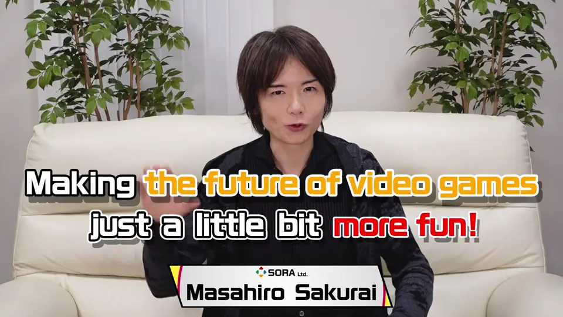
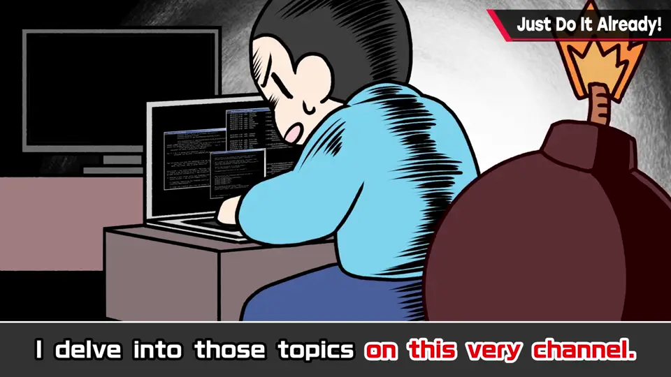
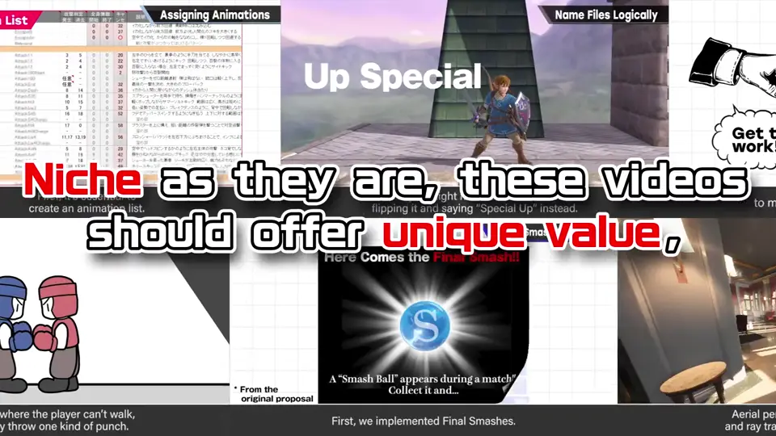
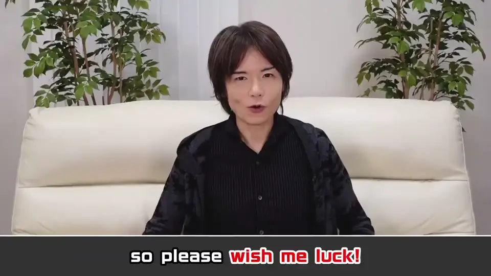

速览
35 秒的预告片。频道目标是把全世界游戏的乐趣稍微垫高一点；怎样给游戏增加乐趣、怎样构思，会在节目中一个一个介绍。小众，但有别处没有的价值；多年后仍能作为参考——这就是节目的目标，请多支持。完整说明见本分类的「关于这个频道」。
1. 预告 0:00
目标：把全世界（未来的）游戏的乐趣稍微垫高一点。


怎样给游戏增加乐趣、怎样构思——会在这个节目里一个一个介绍。
小众，但有别处没有的价值；多年后仍能作为参考。


flowchart LR
A[增加乐趣的方法] --> C[节目]
B[构思法] --> C
C --> D[多年后仍可参考]
自测题
1. 这个频道的目标是什么？
把全世界游戏的乐趣稍微垫高一点。 0:06
2. 节目会介绍哪两类内容？
怎样给游戏增加乐趣，以及构思方法。 0:12
3. 樱井希望节目具有怎样的价值？
小众，但有别处没有的价值，多年后仍能作为参考。 0:18